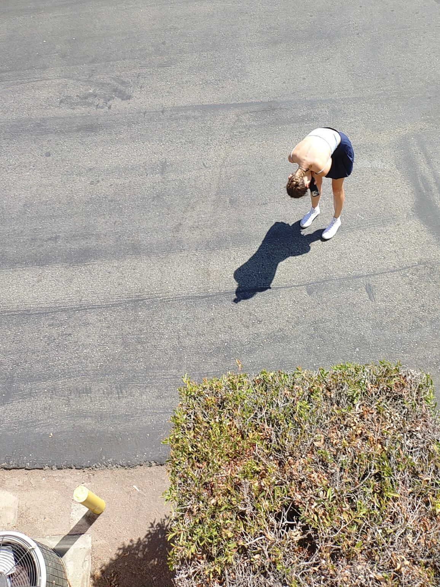

Anna Muzina. Folded. Los Angeles, USA
This work continues the artist’s interest in chance street scenes observed from a detached perspective. The photograph was taken as part of an ongoing series documenting everyday life in the city, where ordinary gestures - stopping, bending down, pausing - become subjects in their own right.
What interests the artist is the contrast between the ordinariness of the moment and the sense of drama created by the composition. The elevated viewpoint and the figure’s posture are not simply formal choices; they shape how we read the scene, showing how a simple everyday action can take on an entirely different meaning depending on the angle from which it is viewed.
- - -
Эта работа продолжает интерес автора к случайным уличным сценам, снятым с отстранённой точки зрения. Снимок сделан во время серии наблюдений за городской повседневностью, где обычные действия прохожих - остановка, наклон, пауза, рассматриваются как самостоятельные, самодостаточные сюжеты. Для автора важен контраст между обыденностью происходящего и драматизмом, который создаёт сама композиция: высота съёмки и поза становятся не просто формальными приёмами, а часть высказывания о том, как меняется восприятие простого действия в зависимости от угла зрения.
- - -